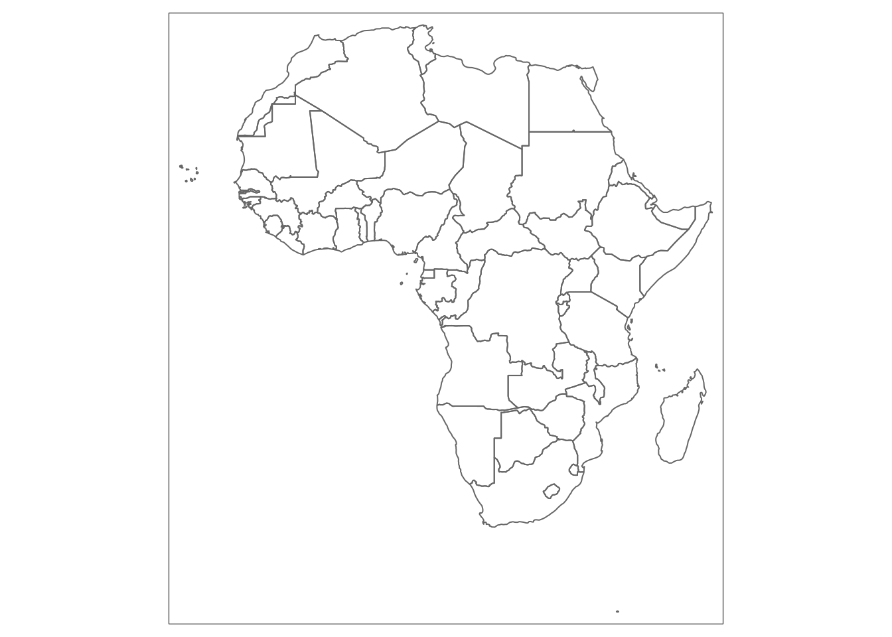

Chapter 5 Visualising spatial data part 1: sf, mapview, tmap
In this section we will learn:
- How to create a static map
- Filled with colours based on the categorical variable
- Filled with colours based on the continuous variable
- How to create an ordered and unordered list
Hint: In order to work properly a list requires an empty line beforehand.
5.1 tmap package
5.1.1 Basics (this step can be removed if the basic steps can be put in ch.3 ‘R recap’, since they repeat for all packages)
Set up the working directory with the command setwd("path to your directory") or with the openProject function as follows (recommended):
Install required packages
cran_packages_to_install <- c(
"tidyverse", # metapackage containing dplyr, ggplot2 and other packages
"sf", # package for working with spatial data
"rnaturalearth", # data package
"rnaturalearthdata" # data package
)
install.packages(cran_packages_to_install)Load the packages
##
## Attaching package: 'dplyr'## The following objects are masked from 'package:stats':
##
## filter, lag## The following objects are masked from 'package:base':
##
## intersect, setdiff, setequal, unionCreate a dataset
5.1.2 Static maps
Map with colour fill based on the continuous variable
ggplot(africa) +
geom_sf(aes(fill=lastcensus)) +
coord_sf(datum = NA) +
labs(fill = "Last census") +
theme_minimal()
Crate a categorical variable
africa <- africa %>%
mutate(cuts = case_when(
lastcensus <= 1970 ~ "1970 or earlier",
lastcensus > 1970 & lastcensus <= 2002 ~ "between 1970 and 2002",
lastcensus > 2002 & lastcensus <= 2008 ~ "between 2002 and 2008",
lastcensus > 2008 & lastcensus <= 2010 ~ "between 2008 and 2010",
lastcensus > 2010 & lastcensus <= 2012 ~ "between 2010 and 2012"))Map with colour fill based on the categorical variable
ggplot(africa) +
geom_sf(aes(fill=cuts)) +
coord_sf(datum = NA) +
theme_minimal() +
labs(fill = "Last census") +
scale_fill_manual(values = c("red4", "red1", "tomato1", "gold","darkolivegreen2"))
5.1.3 Layers
5.1.4 Interactive maps
5.2 sf
5.3 mapview
Mapview package allows for an interactive viewing of spatial objects in R.